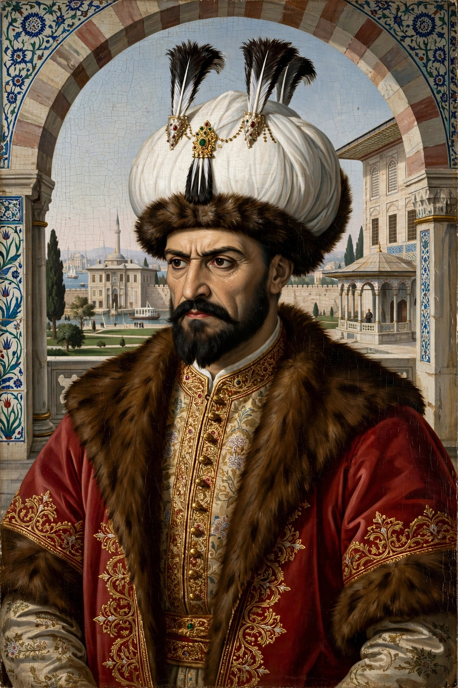

| Selim I | |
|---|---|
 | |
| Sultan of the Ottoman Empire | 25 April 1512 – 22 September 1520 |
| Born | 10 October 1470, Amasya |
| Died | 22 September 1520 (aged 49), Çorlu |
| Predecessor | Bayezid II |
| Successor | Suleiman the Magnificent |
| Epithet | Yavuz ("the Grim" / "the Stern") |
Selim I (Ottoman Turkish: سليم اول; 10 October 1470 – 22 September 1520), known as Selim the Grim (Turkish: Yavuz Sultan Selim), was the sultan of the Ottoman Empire from 1512 until his death in 1520. In a reign of only eight years he dramatically expanded the empire: he conquered the Mamluk Sultanate of Egypt and Syria, took control of the Hejaz and the holy cities of Mecca and Medina, and defeated Safavid Persia, making the Ottoman Empire the dominant power of the Islamic world and roughly doubling its territory.
Selim, a son of Sultan Bayezid II, forced his father's abdication in 1512 with Janissary support, then eliminated his brothers and nephews to secure the throne — the fratricidal practice sanctioned by Ottoman custom. He then turned on the Qizilbash, the Turkmen supporters of the Safavid shah Ismail I within Anatolia, ordering a purge in which tens of thousands were registered, deported or killed.
In 1514 Selim marched east and met Ismail at the Battle of Chaldiran (23 August 1514). Ottoman artillery and Janissary muskets, deployed behind chained wagons, decisively defeated the Safavid cavalry. Selim annexed eastern Anatolia and briefly occupied Tabriz; supply difficulties and Janissary discontent forced his withdrawal, but the frontier established then endured for a century.
In 1516–1517 Selim destroyed the Mamluk Sultanate in two campaigns. At Marj Dabiq (24 August 1516), north of Aleppo, the Mamluk army was annihilated and Syria fell. At Ridaniya (22 January 1517), outside Cairo, Selim outflanked the Mamluk defences and took Egypt. The last Abbasid caliph of Cairo, al-Mutawakkil III, was taken to Istanbul; later tradition held that he formally transferred the caliphate to Selim, and the Ottomans assumed the role of custodians of Mecca and Medina, with the title Servant of the Two Holy Sanctuaries. Selim also seized the spice trade routes through Egypt and began building a Red Sea fleet against the Portuguese.
Selim died in September 1520 at Çorlu, reportedly of cancer or anthrax, while preparing a new campaign (possibly against Rhodes or Hungary). He was succeeded by his son Suleiman the Magnificent. Selim more than doubled the empire's size, filled its treasury, and shifted its centre of gravity toward the Arab Middle East. He was also a poet in Persian and a famously austere, irascible ruler — "the Grim" — whose viziers served at the constant risk of execution.
See also: Ottoman Empire · Ismail I · Battle of Chaldiran · Suleiman the Magnificent